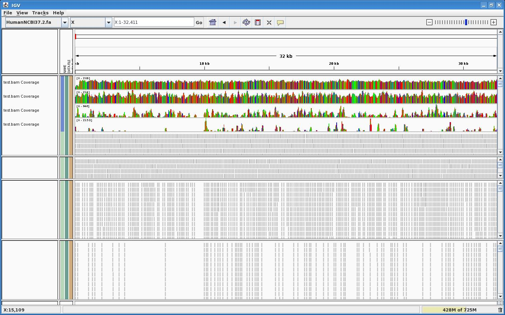

Preamble
This is a more advanced version of the tutorial EAGLE Use Case - Simulating a uniform reads distribution in our PhiX simulation.
We are first extracting a segment of a chromosome (a few million bases long).
We then want to generate reads over this region by using a Gamma distribution.
Initialisation
If you haven't done it yet, you may refer to the EAGLE - Installation and configuration instructions.
For the moment only the snapshot version will work:
EAGLE_PATH=/illumina/development/EAGLE/EAGLE-snapshot-20120308 PATH=$EAGLE_PATH/bin:$PATH EAGLE_SHARE=$EAGLE_PATH/share/EAGLE-1.0.0 EAGLE_LIBEXEC=$EAGLE_PATH/libexec/EAGLE-1.0.0
Segment extraction
In this example, we extract chrX:31137343-33357725 (2,220,383 bases).
There are several ways (creating a VCF file with a deletion before and another deletion after the segment, or using the fastaDump tool and post-process its output, etc.) but the easiest way is to use a default ploidy level of 0 and a copy number of 1 for the segment you are interested in:
$EAGLE_PATH/bin/applyVariants \ --reference-genome=/illumina/scratch/iGenomes/Homo_sapiens/UCSC/hg19/Sequence/Chromosomes/chrX.fa \ --variant-list=$EAGLE_SHARE/Variants/None.vcf \ --sample-genome=./my_sample
This brings chrX from the Human reference into ./my_sample. Then create the following tab-separated file:
#CHR FIRST_POS LAST_POS GROUP_NUMBER chrX 31137343 33357725 2
The group number has to be an integer > 1. Then run:
$EAGLE_LIBEXEC/applyCopyNumber.pl --sample-genome=./my_sample --copy-number=segments.tab
This generates an additional ./my_sample/CNV_2.fa (and its *.fai counterpart) that contains the portions of DNA that we are interested in.
If you are interested in multiple segments, just list them all in segments.tab (using a different group number so that they end up in different files). If these multiple segments come from various chromosomes, you need to add these to the --reference-genome parameter in applyVariants, and remember to set the default ploidy to '0' for these too (see the next section).
Reads generation
First we generate our EAGLE workspace.
Let's say we want: Average coverage of 100x + single reads:
configureEAGLE.pl \ --run-info=$EAGLE_SHARE/RunInfo/RunInfo_SingleRead1x1Tiles.xml \ --reference-genome=./my_sample \ --variant-list=$EAGLE_SHARE/Variants/None.vcf \ --quality-table=$EAGLE_SHARE/QualityTables/DefaultQualityTable.qval \ --coverage-depth=100 \ --genome-mutator-options="--ploidy-chromosome=chrX --ploidy-level=0" \ --fragments-allocator-options="--tls=101:101:101:10:10:FRp:RFm"
Note: The --tls option sets all fragments to be 101 bases long. You should remove this option if generating paired reads.
We then want to generate our default fragments files:
cd EAGLE make fragments ls -l fragments.pos
You should see that fragments.pos is 4396798 bytes long.
Each values is encoded on 2 bytes, which means that we have generated 2198399 reads (note that this corresponds to 100x of our 2220383 bases with reads of length 101 bases (2220383*100/101=2198399).
Now the R bit: generating a list of position intervals based on a Gamma based distribution:
R
x<-rgamma(2198399, shape=.01, rate=1)
y<-round(x/sum(x)*2000000)
f <- file("fragments.pos", "wb")
writeBin(as.integer(y),f, size=2)
close(f)
quit("no")
Now to simulate the sequencing:
make
or
make bam
This should take about 1min30s to complete.
Results

From top to bottom, we used Gamma shape parameters smaller and smaller.
{kind=link}